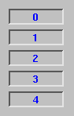
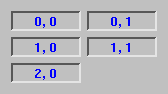
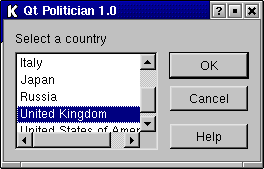
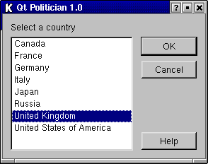

[Prev: Styles and Themes] [Home] [Next: Events]
Layouts provide a powerful and flexible alternative to using fixed sizes and positions. Layouts free programmers from having to perform size and position calculations, and provide automatic scaling to suit users screens.
Qt provides layout managers for organizing child widgets within the parent widget's area. They feature automatic positioning of child widgets, automatic resizing, sensible minimum and default sizes for top-level widgets and automatic repositioning when the contents or the font changes. Qt Designer is optimized for laying out widgets using layout managers.
Qt's built-in layout managers are QHBoxLayout, QVBoxLayout and QGridLayout.
 
QHBoxLayout organizes the managed widgets in a single horizontal row from left to right. QVBoxLayout organizes the managed widgets in a single vertical column, from top to bottom. QGridLayout organizes the managed widgets in a grid of cells; widgets may span multiple cells.
In most cases, Qt's layout managers pick optimal sizes for managed widgets so that windows resize smoothly. If the defaults are insufficient, developers can refine the layout using the following mechanisms:
Setting a minimum size, a maximum size or a fixed size for some child widgets.
Adding stretch items or spacer items. Stretch or spacer items fill empty space in a layout.
Changing the size policies of the child widgets. By calling QWidget::setSizePolicy(), programmers can fine tune the resize behavior of a child widget. Child widgets can be set to expand, contract, keep the same size, etc.
Changing the child widgets' size hints. QWidget::sizeHint() and QWidget::minimumSizeHint() return a widget's preferred size and preferred minimum size based on the contents. Built-in widgets provide appropriate reimplementations.
Setting stretch factors. Stretch factors allow relative growth of child widgets, e.g. two thirds of any extra space made available should be allocated to widget A and one third to widget B.
The 'spacing' between managed widgets and the 'margin' around the whole layout can also be set by the programmer. By default, Qt Designer sets industry-standard values based on the context.
Layouts can also run right-to-left and bottom-to-top. Right-to-left layouts are convenient for internationalized applications supporting right-to-left languages (e.g. Arabic and Hebrew).
Layouts can be nested to arbitrary levels. Here's an example of a dialog box, shown at two different sizes:


The dialog uses three layouts: a QVBoxLayout that groups the push buttons, a QHBoxLayout that groups the country listbox with the push buttons and a QVBoxLayout that groups the "Select a country" label with the rest of the widget. A stretch item maintains the gap between the Cancel and Help buttons.
The dialog's widgets and layouts are created with the following code:
setCaption( "International Trader" );
QVBoxLayout *buttonBox = new QVBoxLayout( 6 );
buttonBox->addWidget( new QPushButton("OK", this) );
buttonBox->addWidget( new QPushButton("Cancel", this) );
buttonBox->addStretch( 1 );
buttonBox->addWidget( new QPushButton("Help", this) );
QListBox *countryList = new QListBox( this );
countryList->insertItem( "Canada" );
/* ... */
countryList->insertItem( "United States of America" );
QHBoxLayout *middleBox = new QHBoxLayout( 11 );
middleBox->addWidget( countryList );
middleBox->addLayout( buttonBox );
QVBoxLayout *topLevelBox = new QVBoxLayout( this, 6, 11 );
topLevelBox->addWidget( new QLabel("Select a country", this) );
topLevelBox->addLayout( middleBox );
Qt makes layouts so easy that programmers rarely use fixed positioning.
Qt Designer makes layouts even easier. With only 17 mouse clicks, you can create and lay out the widgets for the dialog shown above.
Developers can define custom layout managers by subclassing QLayout. The customlayout example provided with Qt presents three custom layout managers, BorderLayout, CardLayout and SimpleFlow, which programmers can use and modify.
Qt also includes QSplitter, a splitter bar that end users can manipulate. In some design situations, QSplitter may be preferable to a layout manager.
For complete control, it is also possible to perform layout manually in a widget by reimplementing QWidget::resizeEvent() and by calling QWidget::setGeometry() on each child widget.